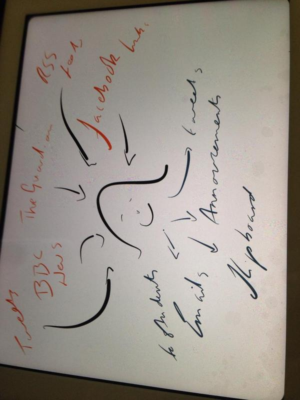
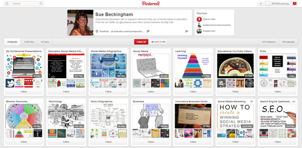
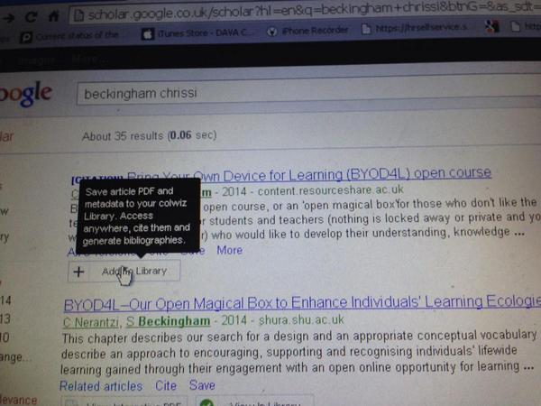

A link to tonight's #BYOD4Lchat Storify - A curation of the 580 tweets during the one hour TweetChat! https://storify.com/BYOD4L/bring-your-devices-for-learning-byod4lchat … #BYOD4L
A link to tonight's #BYOD4Lchat Storify - A curation of the 580 tweets during the one hour TweetChat! https://storify.com/BYOD4L/bring-your-devices-for-learning-byod4lchat … #BYOD4L- I asked 75 of my second years last year if they would like to use socMed in study, virtually all said they want less not more. #byod4lchat
- I asked 75 of my second years last year if they would like to use socMed in study, virtually all said they want less not more. #byod4lchat
 Next @melsiguk Event at University of Sussex on 9 Sept | Digital Media Interaction and Inclusivity http://melsig.shu.ac.uk/?page_id=645 #BYOD4Lchat
Next @melsiguk Event at University of Sussex on 9 Sept | Digital Media Interaction and Inclusivity http://melsig.shu.ac.uk/?page_id=645 #BYOD4Lchat- Next @melsiguk Event at University of Sussex on 9 Sept | Digital Media Interaction and Inclusivity http://melsig.shu.ac.uk/?page_id=645 #BYOD4Lchat
- Thanks for having me as a facilitator. It was lovely to be involved #BYOD4lchat :-) Byee
 @burrblog Thanks for all your valuable contributions Sally.#BYOD4Lchat
@burrblog Thanks for all your valuable contributions Sally.#BYOD4Lchat- Bring your own devices for learning: Communicating Tweet Chat #BYOD4Lchat #BYOD4L https://storify.com/BYOD4L/bring-your-own-devices-for-learning-communicate … via @Storify
- Bring your own devices for learning: Communicating Tweet Chat #BYOD4Lchat #BYOD4L https://storify.com/BYOD4L/bring-your-own-devices-for-learning-communicate … via @Storify
- Bring your own devices for learning: Communicating Tweet Chat #BYOD4Lchat #BYOD4L https://storify.com/BYOD4L/bring-your-own-devices-for-learning-communicate … via @Storify
- Bring your own devices for learning: Communicating Tweet Chat #BYOD4Lchat #BYOD4L https://storify.com/BYOD4L/bring-your-own-devices-for-learning-communicate … via @Storify
- Bring your own devices for learning: Communicating Tweet Chat #BYOD4Lchat #BYOD4L https://storify.com/BYOD4L/bring-your-own-devices-for-learning-communicate … via @Storify
- Bring your own devices for learning: Communicating Tweet Chat #BYOD4Lchat #BYOD4L https://storify.com/BYOD4L/bring-your-own-devices-for-learning-communicate … via @Storify
- Check out this great story on Storify! https://storify.com/BYOD4L/bring-your-own-devices-for-learning-communicate … via @Storify #BYOD4L #BYOD4Lchat
- @magdalenabober @ClaireRidallshu @chrissinerantzi mine did too but only when introduced to GD! Not one had used prior to #BYOD4Lchat
- @chrissinerantziΑύριο υπόσχομαι να δηλώσω παρών.Αυτή την εβδομάδα είναι περίεργο το πρόγραμμα μου.Θα χαρώ πάρα πολύ να μιλήσουμε #BYOD4Lchat
 @romieh check out the #byod4lchat every eve this week 8 to 9pm ... It's hectic but interesting:)
@romieh check out the #byod4lchat every eve this week 8 to 9pm ... It's hectic but interesting:) Don't forget the #byod4l tweetchat tonight. Theme is 'curating'. You can follow using the #byod4lchat handle. Look forward to it!
Don't forget the #byod4l tweetchat tonight. Theme is 'curating'. You can follow using the #byod4lchat handle. Look forward to it!- Don't forget the #byod4l tweetchat tonight. Theme is 'curating'. You can follow using the #byod4lchat handle. Look forward to it!
- Don't forget the #byod4l tweetchat tonight. Theme is 'curating'. You can follow using the #byod4lchat handle. Look forward to it!
- Don't forget the #byod4l tweetchat tonight. Theme is 'curating'. You can follow using the #byod4lchat handle. Look forward to it!
- Don't forget the #byod4l tweetchat tonight. Theme is 'curating'. You can follow using the #byod4lchat handle. Look forward to it!
- Don't forget the #byod4l tweetchat tonight. Theme is 'curating'. You can follow using the #byod4lchat handle. Look forward to it!
- Don't forget the #byod4l tweetchat tonight. Theme is 'curating'. You can follow using the #byod4lchat handle. Look forward to it!
- Don't forget the #byod4l tweetchat tonight. Theme is 'curating'. You can follow using the #byod4lchat handle. Look forward to it!
- Not really curating, more like collecting, but looks funky #BYOD4L Tagboard of #BYOD4Lchat https://tagboard.com/BYOD4Lchat/180813 …
- Not really curating, more like collecting, but looks funky #BYOD4L Tagboard of #BYOD4Lchat https://tagboard.com/BYOD4Lchat/180813 …
- Not really curating, more like collecting, but looks funky #BYOD4L Tagboard of #BYOD4Lchat https://tagboard.com/BYOD4Lchat/180813 …
- *New Blog Post* #BYOD4L: Using devices & apps to communicate - http://thereeddiaries.blogspot.co.uk/2014/07/byod4l-using-devices-apps-to-communicate.html … #BYOD4Lchat
- *New Blog Post* #BYOD4L: Using devices & apps to communicate - http://thereeddiaries.blogspot.co.uk/2014/07/byod4l-using-devices-apps-to-communicate.html … #BYOD4Lchat
- RT @AmandaKSykes: Not really curating, more like collecting, but looks funky #BYOD4L Tagboard of #BYOD4Lchat https://tagboard.com/BYOD4Lchat/180813 …> fab!
- @ChristianaPitta Γεια χαρά. Σήμερα δε θα μπορέσω να συμμετάσχω στο #byod4lchat δυστυχώς. Πάντως ελπίζω να τα πούμε σύντομα.
- @DurchTechNick Good luck with the #byod4lchat facilitation tonight. I will be there in spirit (have meditation class) Curating my mind :-)
 #byod4lchat Tonight's tweet chat 8 - 9 pm is all about Curation http://bit.ly/1yrVydM A complex & crucial topic...See you there #byod4l
#byod4lchat Tonight's tweet chat 8 - 9 pm is all about Curation http://bit.ly/1yrVydM A complex & crucial topic...See you there #byod4l- Really looking forward tonight’s #byod4lchat on collaborating hosted by @neilwithnell & @DurchTechNick & @jimpettiward Starting at 20:00 BST
- Really looking forward tonight’s #byod4lchat on collaborating hosted by @neilwithnell & @DurchTechNick & @jimpettiward Starting at 20:00 BST
- Really looking forward tonight’s #byod4lchat on collaborating hosted by @neilwithnell & @DurchTechNick & @jimpettiward Starting at 20:00 BST
- Do you know the Educause 7 things series? Very useful - here's one about curation http://bit.ly/1nbhEi9 #byod4lchat #byod4l
- Do you know the Educause 7 things series? Very useful - here's one about curation http://bit.ly/1nbhEi9 #byod4lchat #byod4l
- ...Q1 What does curating mean to you? #BYOD4Lchat
- RT @DurchTechNick ...Q1 What does curating mean to you? #BYOD4Lchat
- A1: The filtering of useful materials and tools into a personal learning environment. #byod4lchat
- A1 sorting, storing, organising and archiving information #BYOD4Lchat
 A1 curating is putting useful links on a topic in one place, sharing them, having them accessible across devices #byod4lchat
A1 curating is putting useful links on a topic in one place, sharing them, having them accessible across devices #byod4lchat- @samillingworth @DurchTechNick A1 This is definitely a topic that I don;t really think about specifically #BYOD4Lchat
- A1 Bringing together in one place useful/cool/interesting 'stuff' (and sometimes sharing it too) #BYOD4Lchat
- First Question ...Q1 What does curating mean to you? #byod4lchat
 A1 #BYOD4Lchat collecting, choosing, sorting, saving, combining, sharing.
A1 #BYOD4Lchat collecting, choosing, sorting, saving, combining, sharing.- A1 curating: selecting, presenting, informing & linking. A visual pinboard. #BYOD4Lchat
 A1. Curating for me is collecting and organising (and if I think about museums displaying too?) #BYOD4Lchat
A1. Curating for me is collecting and organising (and if I think about museums displaying too?) #BYOD4Lchat- #BYOD4Lchat A1: using technology to help me compartmentalise my technology use...
 A1: Storing stuff that I find interesting in places where I might be able to find them again. #BYOD4Lchat
A1: Storing stuff that I find interesting in places where I might be able to find them again. #BYOD4Lchat- #byod4lchat A1- never heard of the term til last night - is there a difference between collating/curating or is it just specific to digital
- A1 curating also about dealing with information overload #byod4lchat
- @EducateIndesign great - how is it visual? #BYOD4Lchat
- A1 #soundcloud is working well for our f2f meeting summaries to create a summary record of discussions #byod4lchat #byod4l so audio records
- @AmandaKSykes Curating can be very personal or for sharing... What do you think is the difference in how we curate each? #byod4lchat
- @magdalenabober #BYOD4Lchat definitely agree. I find that by using so many different sources i find it difficult to keep up with myself!
- @julianzzzz @AntonyGroves welcome guys! Jump in with the hashtag. Start answers with A1 etc. #BYOD4Lchat
 #BYOD4Lchat A1 for me it always suggests collecting in some sort of highly organised manner. My approach is somewhat more eh chaotic.
#BYOD4Lchat A1 for me it always suggests collecting in some sort of highly organised manner. My approach is somewhat more eh chaotic.- @Sisson1Sisson great question - to me its not just collating but what I do with the info #BYOD4Lchat
- @cpjobling Like the use of the word 'might'! That's often how I feel #byod4lchat
- A1: Collecting certainly - I find organizing doesn't happen unless I can categorize it at the time it's collected. #BYOD4Lchat
- @cpjobling I like the idea of 'might find them again'! #BYOD4Lchat
- @julianzzzz Definitely. Sharing's an interesting part of it too. Remember to use the #byod4lchat hashtag ;-)
- @Sisson1Sisson definitely not. To me term is bound up with museums (job of museum curator). Might help with your thinking? #BYOD4Lchat
- #byod4lchat A1 organising array of information, to be disseminated into a meaningful format for readership
- @jimpettiward I'm more discriminating about the things I curate to share #BYOD4Lchat
- @cpjobling organizing is partly about where I save things #BYOD4Lchat
- @jimpettiward most of what gets collected is never looked at again ... but it might be useful one day :-) #BYOD4Lchat
- A1 - The Subject Guides we use at Sussex (Libguides) to gather what we hope will be useful resources for students in one place #BYOD4Lchat
- I'm wondering if we think curating should be in some way "purposeful"? #byod4lchat
- A1. Curating = Drawing together resources (usually created by others) under a particular theme or for a specific purpose #BYOD4Lchat
- A1 #byod4lchat even the decisions I make about saving and sorting emails day to day feels like curation.
- @RodCullen thats the plan #BYOD4Lchat
- @magdalenabober I agree. Many accounts with favourites folder. Pinterest sort of helps but links, tweets, shares constantly. #BYOD4Lchat
- Reminder of Q1 - What does curating mean to you? #byod4lchat
- @andrewmid @cpjobling that part was the bit I reckoned I need to improve on when I was reflecting today! http://hayleyofatkinson.wordpress.com/2014/07/16/the-worlds-most-unorganised-ex-librarian/ … #BYOD4Lchat
- A1 curating also about using expert/professional knowledge or to gain more knowledge/expertise in an area #byod4lchat
- A1 collecting, gathering, recording, piling up, hoarding, etc.for sure. Sharing? Reusing? Retrieving? Organising?...not sure #byod4lchat
- @magdalenabober #BYOD4Lchat Intersting. Curating as a kind of knowledge brick-building exercies
- @julianzzzz yes, but we all save and sort them #BYOD4Lchat
- #byod4lchat A1 I find my curating-ness is for personal uses to revisit rather than a social thing
- @neilwithnell Individually or collectively? #BYOD4Lchat
- @reedyreedles I agree. Some of the social aspects of curating feels forced. #byod4lchat
- #BYOD4Lchat Ok, interesting responses. Q2 coming up in just a couple of ticks so get ready...
- @ladyculottes @andrewmid it's really tricky. Tagging helps, particularly if you can have multiple tags. Do libr'ns do it better? #BYOD4Lchat
- A1 Doesn't 'curate' imply some kind of selection/filter process rather than just gathering and saving? #byod4lchat
- @ladyculottes @cpjobling well there's still value in learning intention: responding, valuing, etc. Mustn't dismiss just saving #byod4lchat
- @RodCullen hopefully for others as well as self #BYOD4Lchat
- ....Q2 What mobile device(s)/tool(s) do you use to curate teaching and learning content? #BYOD4Lchat
- @reedyreedles Mine too, unless I deliberately curate for others. Usually my amazing students #BYOD4Lchat
- @neilwithnell I think I'm doing it more for personal that collective reasons at the moment #BYOD4Lchat
- @reedyreedles Is sharing curations the way to share thought processes I wonder a la mind-mapping? #BYOD4Lchat
- A2 Most of my curating done on laptop/PC but can then consult on mobile devices e.g. Diigo, Flipboard etc. I need more practice! #byod4lchat
- A2 links in my Powerpoint for lectures that then goes on the VLE - very old school ;) #byod4lchat
- @RodCullen @neilwithnell social booking - about social potential more often than not -used to love finding Delicious mines #byod4lchat
- RT @DurchTechNick ....Q2 What mobile device(s)/tool(s) do you use to curate teaching and learning content? #BYOD4Lchat
- A2: Pearltrees is the only mobile app I've used for this so far. On the desktop I've used more tools .... #BYOD4Lchat
- @RodCullen me too,but ....#BYOD4Lchat
- @Sisson1Sisson #BYOD4Lchat my email folders become a repository of prompts and notes I rely on more than most things.
- A1 #BYOD4Lchat whatever I have in my hand! Tablet easier, but phone if I find something when I'm on the move etc.
- RT @magdalenabober A2 links in my Powerpoint for lectures that then goes on the VLE - very old school ;) #byod4lchat
- A2: I use my laptop (almost exclusively) for curating, but transferable across devices, e.g. with google bookmarks #byod4lchat
 @jimpettiward A1 perhaps tagging with keywords - like social bookmarking all my links making it easier to store, find and share #BYOD4Lchat
@jimpettiward A1 perhaps tagging with keywords - like social bookmarking all my links making it easier to store, find and share #BYOD4Lchat- A2 Lists in Word docs, Zotero, Moodle spaces - on any device/desktop that's close to hand #BYOD4Lchat
- Q2: What mobile device(s)/tool(s) do you use to curate teaching and learning content? #byod4lchat
 #BYOD4Lchat A2 tools: Twitter, diigo, Evernote. Devices: android tablet
#BYOD4Lchat A2 tools: Twitter, diigo, Evernote. Devices: android tablet- @AnneHole = Queen of Curating! #BYOD4Lchat
- A2 - sorry but use apple products (other devices are available) #BYOD4Lchat
- @DurchTechNick None unless you count a Window 8 tablet with a keyboard that I use like a laptop most of the time to be honest #BYOD4Lchat
- A2 #BYOD4Lchat whatever I have in my hand! Tablet easier, but phone if I find something when I'm on the move etc.
- A2 #BYOD4Lchat whatever I have in my hand! Tablet easier, but phone if I find something when I'm on the move etc.
- A2: Ipad and smartphone ...although to be honest mainly done on PC #BYOD4Lchat
- #BYOD4Lchat A2 curate tweets using paper.li - capture ideas in Evernote - keep files readily accessible in Dropbox - rest stored in my head!
- A1 @Cheryl4TeL Tagging is good but I often forget/can't be bothered and at some point have to go back and tag/delete links etc #byod4lchat
- @cpjobling #byod4lchat I've never used Pearltrees, any good? What desktop tools do you use?
- @AmandaKSykes note to self to check out ZoteroTY #BYOD4Lchat
- #BYOD4Lchat A2 Seldom curate on mobile. Tends to be favouriting a tweet to return or emailing it to myself for later
- #byod4lchat A2 Mendeley Diigo Endnote Google scholar Save ResearchGate have Colwiz (but slow on iPad) flipboard storify
- A2 #BYOD4Lchat f2f 2day concluded purpose determined apps. Evernote, Delicious, Diigo, notes. Mendeley, Endnote, Zotero (no app) citations
- on hubby's Mac and can't find hashtag on the keyboard, having to copy and paste - anyone help #BYOD4Lchat #BYOD4L
- #BYOD4Lchat having ppt slides a safe home is vital for me. My problem is not always knowing which is the 'default' most up to date version.
- A2: I try not to be seduced by gimmicky apps (and often fail) But only a few stand the test of time/frequent use #byod4lchat
- q2. Tried Diigo, Delicious, Zotero, Pinterest, Padlet, etc. and generally abandoned them all. #BYOD4Lchat
- A2: I don't like many of the options available in apps on mobile devices (see http://qub.me/IxPL_o for why). #BYOD4Lchat
- A1 Curating digital content and organizing in a re-findable way both for yourself and to share with others #BYOD4Lchat
- @irglover What about Google bookmarks? #byod4lchat
- @cpjobling @magdalenabober I not thinking about this properly - I do that too - not considered it curating - you are right tho. #BYOD4Lchat
- lots of mentions of scoop it today-any thoughts? #BYOD4Lchat
- @AmandaKSykes I'm exactly the same. Remember the hastag is #byod4lchat though :-)
- @reedyreedles I frequently favourite tweets planning to follow up later but never get round to it... #BYOD4Lchat
- @cpjobling @irglover You can label them, and they follow across devices and continents :-) #BYOD4Lchat
- @jimpettiward thanks saves me a Google ... would never have guessed :-) #byod4lchat
- @samillingworth not tried that, but chrome saves my browser bookmarks and can access them on other devices (using chrome). #BYOD4Lchat
- @irglover so what do you do Ian for bookmarking, note and citation management etc? #byod4lchat
- @DurchTechNick That'll teach me to watch tv at the same time :-) #BYOD4Lchat
- I guess using Endnote counts too - probably most used by me in practice #BYOD4Lchat
- A2 My smartphone is device of choice for ad hoc curating. Endlessly copying links into OneNote & photographing conference PPP. #BYOD4Lchat
- A2 Laptop, phone, iPad are used to curate useful resources using the apps and websites #BYOD4Lchat
- A2: Has anyone mentioned Delicious yet? #BYOD4Lchat
- #Byod4lchat A2 cross device bookmarks is about my limit, though I use mind maps & notes &have used audionotetaker http://youtu.be/KF9cppBMS-s
- @irglover I do this too. Try labelling (tagging) as well. Just discovered this, very helpful. #BYOD4Lchat
- A2 #BYOD4Lchat if talking apps rather than devices: Feedly, Evernote, Diigo, Flipboard, Twitter, G+, joined up with IFTTT
- #BYOD4Lchat my personal space on the network and Microsoft onedrive for teaching resources. I would like to share more though.
- @neilwithnell Scoop.it search results not that great. Used Google instead & bookmarklet, but more tricky to install on iPad #BYOD4Lchat
- @andrewmid sad to say, but a google doc or spreadsheet of links works for me #BYOD4Lchat
- A2 @AnneHole #byod4lchat Intrigued by IFTT after seeing in GH this afternoon. Will look into that... Have you used it?
- Ok time is flying by as always so Q3 is right around the corner. Be prepared, be very prepared...#BYOD4Lchat
- Ok time is flying by as always so Q3 is right around the corner. Be prepared, be very prepared...#BYOD4Lchat
- #BYOD4Lchat A2 On desktop I use Diigo for websites and Mendeley for academic articles.
- @andrewmid Same things. Sorry for confusion. #BYOD4Lchat
- @AntonyGroves Yes. My glorious Delicious account stopped when it was sold. A real mine of wonderful info back in the day #byod4lchat
- #BYOD4Lchat A2 Oh and sometimes just paste links into Evernote notes
- @AnneHole clipboard is good #BYOD4Lchat been trying it out thank you
- A2. Evernote. Faves on twitter. Faves on feedly. Collections in iBooks app. Post it notes. My memory.... #BYOD4Lchat
- ...Q3: What sorts of things do you curate? #BYOD4Lchat
- ...Q3: What sorts of things do you curate? #BYOD4Lchat
- A2 in relations to tools: Pinterest Diigo Bundlr Scoopit Mendeley ResearchGate #BYOD4Lchat
- RT @DurchTechNick ...Q3: What sorts of things do you curate? #BYOD4Lchat
- #BYOD4Lchat does anyone use Talis Aspire's online reading lists?
- @DurchTechNick Mainly stuff I want to pinch :-) #BYOD4Lchat
- A3: Still very limited. Mainly bookmarks, ideas and reading lists. #byod4lchat
- @neilwithnell Flipboard? #BYOD4Lchat
- @neilwithnell like it when people share stuff that has been annotated usefully, but never used it myself to curate #BYOD4Lchat
- @suebecks what is Bundlr? not heard of it before #BYOD4Lchat
- A3 Thinking about curating and PLNs and PLEs (Personal Learning Networks and Environments), can we curate people/connections?? #byod4lchat
- A3 I save all sorts of (useful) stuff, just need to look at why and whatI do with it #BYOD4Lchat
- @jimpettiward @AnneHole me too - have link saved in Notes somewhere - prob can't find it tho ;) #BYOD4Lchat
- A3: Mainstream articles (bbc,newspapers) on ethical issues to share with school kids #BYOD4lchat
- @andrewmid just to clarify, not favouriting that your account stopped! :-) #BYOD4Lchat
- @AnneHole that as well, spell checker! #BYOD4Lchat
- A2 Google search is so good I never really go to my archives... #byod4lchat
- links to resources want to review, share elsewhere #BYOD4lchat
- A3: for teaching YouTube videos, Open Education Resources, wikipedia articles and wikibooks, ... all tagged by module code. #BYOD4Lchat
- A3 Depends why I'm curating. For me: anything that interests personally or professionally. For others: related to their aims #BYOD4Lchat
- @ladyculottes me neithe, r need to look at this #BYOD4Lchat
- A3 #BYOD4Lchat the library looks to curate online reading lists in cooperation with academics.
- A2 a mix of outside interests and tech. About 70/30 mix. #BYOD4Lchat
- @magdalenabober Bundlr is a bit like scoopit but not so visual http://bundlr.com/u/suebecks #BYOD4Lchat
- @anortcliffe yes - had heard that but I'm not an iPad user. Don't think there is an app for Windows 8? #BYOD4Lchat
- A3 #BYOD4Lchat 1. News, topical things to share immediately on TEL topics or of interest to colleagues.
 a3 pictures, links, news feeds, opinions #BYOD4Lchat
a3 pictures, links, news feeds, opinions #BYOD4Lchat- @BexFerriday I try to keep the interests apart but they seem to blend into one a lot when curating #BYOD4Lchat
- #byod4lchat A3 my curations to students for employability pic.twitter.com/AbzKKIFJq5
- @andrewmid how do u remember what to search for tho Andrew? #BYOD4Lchat
- A3 #BYOD4Lchat 2. Reference material worth saving for future.
- #BYOD4Lchat A3 good stuff, things I think folks should know about, to inform what I do, to enrich our resources etc etc
- @AnneHole Sounds like IFTT is worth further investigation. What do you do with them all once they're in Evernote? #BYOD4Lchat
- A3: See for example http://qub.me/DHqVfq for a module (EG-249 Web Apps Technology) that's now retired #BYOD4Lchat
- Our #BYOD4L paper.li ▸ today's top stories via @BYOD4L @SocNetAnalysts @jimpettiward http://paper.li/suebecks/1391012933 … #BYOD4Lchat
- Our #BYOD4L paper.li ▸ today's top stories via @BYOD4L @SocNetAnalysts @jimpettiward http://paper.li/suebecks/1391012933 … #BYOD4Lchat
- A3. What do I curate? Here's a few of my Evernote notebook headings as an idea... #BYOD4Lchat pic.twitter.com/kosibjl8f2
- a3. Closest I generally come to curation is organising my photos on Flickr with Sets, Tags, Collections, etc. #BYOD4Lchat
- #BYOD4Lchat A3 I seek ideas and inspiration. I collect examples of good (not best) practice to share and build on.
- @andrewmid @samillingworth I've always thought they were the same...doubting myself now though #BYOD4Lchat
- A3 - much harder question to answer than I expected - don't plan to curate things - just sort of happens when I find stuff #BYOD4Lchat
- @jimpettiward @AnneHole ... once in Evernote from IFTTT you should periodically check in to tag 'em I guess #BYOD4Lchat
- A3 and A2 Pinterest allows me to keep all interests separate. My a Doctor Who board is massive though...#BYOD4Lchat
- @jimpettiward @AnneHole that is the real Q, is Evernote just a digital loft, where you dump things that might come in handy #BYOD4lchat
- another shameless plug: blog post on content curation sites - the illustration is a very nice summary: http://elearningatshu.wordpress.com/2013/09/19/what-is-a-content-curation-site/ … #BYOD4Lchat
- another shameless plug: blog post on content curation sites - the illustration is a very nice summary: http://elearningatshu.wordpress.com/2013/09/19/what-is-a-content-curation-site/ … #BYOD4Lchat
- @ladyculottes oh, and the low numbers? I regularly clear out as well as adding stuff #BYOD4Lchat
- A3: Currently looking at how to make our subject guides more useful to students - which databases do we continue to include? #BYOD4Lchat
- Much of what is scooped is blog content - any quality issues? Do you check the trustworthiness of everything you curate? #BYOD4Lchat
- @suebecks I know Sue, I need to use it more #BYOD4Lchat
- “@ladyculottes: A3. What do I curate? Here's a few of my Evernote notebook headings as an idea... #BYOD4Lchat pic.twitter.com/b850Ql0EFV” nice!
- @cpjobling tis the librarian in me. I just need to focus on making sure more stuff finds it way there rather than other places #BYOD4Lchat
- Of course I just leave all my Chrome tabs open til I've digested their contents. Days on end. But I get there. #BYOD4Lchat
- #BYOD4Lchat Okaydokay curators time for another question I think. I'll rustle one up in 2 ticks....
- @andrewmid A brutally effective method! :-) #byod4lchat
- @drdjwalker yes, things that look if further interest but need to reflect upon so to integrate into learning environment. #BYOD4Lchat
- @RodCullen yep. I 'stumbled upon' curation by accident rather than design #BYOD4Lchat
- @andrewmid sounds familiar #BYOD4Lchat
- @jimpettiward @hack_kay @AnneHole I just upgraded to make my 'loft' bigger and my guilt was gone :D #BYOD4Lchat
- @irglover thanks ian, i copied link, closed twitter app, opened notes app, pasted, closed notes, back to twitter:need to curate #BYOD4Lchat
- @andrewmid- , yep that works for me, if I don't read by end of week, close the TAB ! #BYOD4lchat
- A3 @irglover #byod4lchat An example of IFTT - If we're shamelessly plugging then http://bit.ly/1spdG7m ! Developing a PLN
- @AntonyGroves be great to get input from academics and students to help shape the guides. #BYOD4Lchat
- In the good old days the star in Google Reader was great and effortless and you could share your favourites as an RSS feed. #BYOD4Lchat
- Ditto MT @andrewmid: I just leave all my Chrome tabs open til I've digested their contents. Days on end. But I get there. #BYOD4Lchat”
- @irglover @andrewmid I'm a nightmare for this. Change days to weeks (I've missed gigs I meant to buy tickets for this way...) #BYOD4Lchat
- ...Q4: How do get others to engage with your curated content? #BYOD4Lchat
- ...Q4: How do get others to engage with your curated content? #BYOD4Lchat
- @julianzzzz after your last tweet re Aspire, I was thinking exactly the same thing! #BYOD4Lchat
- @andrewmid #BYOD4Lchat chrome or Safri tabs open to risky, loose when open link from a tweet etc
- @julianzzzz @AntonyGroves I think you have to consult with all parties otherwise they don't have ownership #BYOD4Lchat
- RT @DurchTechNick ...Q4: How do get others to engage with your curated content? #BYOD4Lchat
- A4: Make it specific and useful to them. i.e. supply a demand #byod4lchat
- @DurchTechNick Q4: I switched to a platform, where students could add their own content as well, much more engagement #BYOD4lchat
- @reedyreedles @andrewmid #byod4lchat I wish i did, I worry about how much I've missed from closing browser windows due to lack of time
- @cpjobling #BYOD4Lchat now it is save in google scholar
- @jimpettiward @hack_kay @AnneHole Digital loft - I call it my cupboarding habit. Hoarding really #byod4lchat
- @AntonyGroves keep the guides visual and concise. What about QR codes for further info linked to website? #BYOD4Lchat
- A4: many/(most?) curation services allow sharing public sharing of a curated collection.... continues #BYOD4Lchat
- A4 Current project involves embedding digital literacies inc. curation in PDP of a course = part of assessment #byod4lchat
- @samillingworth such as 'I want to see these sources referred to in your assingments' ;) #BYOD4Lchat
- A4: ... Private collections and collaborative curation is the challenge. Often a premium feature. #BYOD4Lchat
- @magdalenabober haha! Exactly. Let's create the demand and then supply it :-) #byod4lchat
- A3 I'm a big fan of infographics so save these in Pinterest. http://www.pinterest.com/suebecks/ #BYOD4Lchat #BYOD4L pic.twitter.com/0MsgELJm8n
- A3 I'm a big fan of infographics so save these in Pinterest. http://www.pinterest.com/suebecks/ #BYOD4Lchat #BYOD4L pic.twitter.com/0MsgELJm8n
- a4. shamelessly plug it in tweetchats? #BYOD4Lchat :-)
- A4 #BYOD4Lchat tweet it, link to it in blog posts, share it in G+, send diigo tags when asked for resources
- A4 #BYOD4Lchat tweet it, link to it in blog posts, share it in G+, send diigo tags when asked for resources
- @irglover no shame there #BYOD4Lchat
- A4 Has to be specific to, and useful for, them. Bringing them on board to have ownership also helps #BYOD4Lchat
- A4 Has to be specific to, and useful for, them. Bringing them on board to have ownership also helps #BYOD4Lchat
- @neilwithnell @DurchTechNick moved from using scoop-it -no idea if they viewed, to closed Google community, they posted own #BYOD4lchat
- A4 I clearly haven't learnt how to engage with my own curated content! One step at a time please ;-) #byod4lchat
 Sorry cant join #BYOD4Lchat as watching and tweeting about #cloudlab for work.
Sorry cant join #BYOD4Lchat as watching and tweeting about #cloudlab for work.- A4. As end user I want to know why I should look at something. Useful labelling/annotation is key, not just more info #BYOD4Lchat
- A3 I like to try new tools to create and store information as topics #BYOD4Lchat
- @AmandaKSykes #BYOD4Lchat Very good point. It's all very well shoving it under their nose but if it isn't relevant it'll be ignored
- @suebecks love look of that sue but it could be the content that's visible, and visual, that is appealing rather than platform? #BYOD4Lchat
- @AmandaKSykes good point. I liked your 'if they build [they] he will come' reference on your blog earlier. They don't come! #BYOD4Lchat
- @anortcliffe I always right click to open new tabs for links #byod4lchat
- A4 Padlet has always impressed me and students have found it simple and effective to collaborate with #BYOD4Lchat
- A4 Padlet has always impressed me and students have found it simple and effective to collaborate with #BYOD4Lchat
- A4 Make clear how resources relate to learning outcomes/assessment - what's in it for students/colleagues? #byod4lchat
- @BexFerriday agreed, great feedback #BYOD4Lchat
- @cpjobling I always ask myself if I'd go (I'm kinda busy sometimes) and if it's 'no' then I have my answer #BYOD4Lchat
- @DurchTechNick @cpjobling It's gotta be useful. Signposts are nice but don't make content useful #BYOD4Lchat
- Very little cajoling needed with Padlet either... #BYOD4Lchat
- A4: encourage them to think about the development of their Dig ID, commenting on and curating articles relevant to their subject #BYOD4lchat
- @Sisson1Sisson @suebecks surely both the content and the platform are important? #BYOD4Lchat Not embarrassed to admit I'm drawn to pretties
- A4 #BYOD4Lchat showcasing how it may enhance the learning experience as well as improving (streamlining?) the day to day administration.
- #byod4lchat folks just running Mendeley on desktop, have Colwiz account (but not open on desktop) gone to google scholar searched ....
- A5 I curate useful 'stuff' for myself as a digital storage cupboard. Realised others might find useful so share via Twitter #BYOD4Lchat
- finding myself favouriting several tweets #BYOD4Lchat (for curation later)
- @AmandaKSykes by curating carefully (preferably collaboratively) you might get buy in. Never really succeeded myself though.... #BYOD4Lchat
- @Sisson1Sisson @DurchTechNick Yup, although why I'd build something then not make it easy to access beats me :D #BYOD4Lchat
- @EducateIndesign thanks Nico! I suspect there's currently a lot on them that isn't used or needed (I'm gathering analytics) #BYOD4Lchat
- @DurchTechNick @jimpettiward I don't think I do in the curating tool - but build what I curate into my teaching #BYOD4Lchat #inefficient
- RT @neilwithnell finding myself favouriting several tweets #BYOD4Lchat (for curation later) :-) ditto
- #byod4lchat ... Searched for papers all come with button to save to Colwiz and button save to library NOT this before spooky
- @ladyculottes @suebecks clarifying - not sure if curated items were pretty hence appealing, or if would appear pretty elsewhere #BYOD4Lchat
- @neilwithnell IFTTT recipe can send favorite tweets to Evernote- can it send to specific notebook? #BYOD4lchat
- Is there a 'favourite' button in Hootsuite? #BYOD4Lchat
- @anortcliffe what is colwiz? #byod4lchat
- @BexFerriday will add Padlet to my list that i'm curating tonight! What do you use this app for? #BYOD4Lchat
- *Drum Roll* Final question on the way..... #BYOD4Lchat
- *Drum Roll* Final question on the way..... #BYOD4Lchat
- @Sisson1Sisson the content is what I find and choose to save on my Pinterest boards. Each image links to the source site #BYOD4Lchat
- @Cheryl4TeL Lino It is fab, great for feedback for sessions etc #BYOD4Lchat
- @magdalenabober I moved from hootsuite to tweetchat for this tonight, much easier interface #BYOD4lchat
- @cpjobling I had to build it into the in-class design too #BYOD4Lchat
- @AmandaKSykes @DurchTechNick do u think perception of ease of accessibility can be subjective? #BYOD4Lchat
- @RodCullen @DurchTechNick @jimpettiward ... but if you could share the curated collection you might be able to save some time. #BYOD4Lchat
- @irglover @anortcliffe But neither of these on my iPad or iPhone. Thinking: multiple devices = multiple tabs/memory! #byod4lchat
- @anortcliffe Oooh, have you got a link? #BYOD4Lchat
- @hack_kay worth looking at - not sure Kay #BYOD4Lchat
- @ladyculottes @Sisson1Sisson I find I have better visual recall than text so it help me locate useful resources, articles, etc #BYOD4Lchat
- @AmandaKSykes go to where they are already and see if it can be used? If you build it, they will not come? #BYOD4Lchat
- @cpjobling @DurchTechNick @jimpettiward Not sure they are organised enough - mad ramblings and odd collections often #BYOD4Lchat
- @cpjobling @RodCullen @DurchTechNick #byod4lchat My own fav tool is Diigo which is great for sharing, annotating, building bibliographies..
- .....Q5 What tools do you use to curate all useful information/content? #BYOD4Lchat
- @jimpettiward @RodCullen @DurchTechNick Diigo is great but I find it odd to have to use a custom browser on my devices. #BYOD4Lchat
- RT @DurchTechNick .....Q5 What tools do you use to curate all useful information/content? #BYOD4Lchat
- RT @DurchTechNick .....Q5 What tools do you use to curate all useful information/content? #BYOD4Lchat
- #byod4lchat Colwiz feature on google scholar +add to library button which adds to your Colwiz pic.twitter.com/80xVnnZkKV
- @BexFerriday Not sure they necessarily want me in their personal spaces. Build collaboratively instead I think #BYOD4Lchat
- @EducateIndesign have started a padlet for collaboration http://padlet.com/magdabober/twitterteach …, can also be useful prior/during large meetings #byod4lchat
- @EducateIndesign have started a padlet for collaboration http://padlet.com/magdabober/twitterteach …, can also be useful prior/during large meetings #byod4lchat
- How to be a star sharer > @AnneHole #BYOD4Lchat tweet it, link to it in blog posts, share it in G+, send diigo tags when asked for resources
- A5: Still searching! Tried out @Delicious today, but preferred Google Bookmarks! #byod4lchat
- @AmandaKSykes perception of ease will certainly get people onboard sooner. #BYOD4Lchat
- Am evaluating Evernote (Google hangout homework), watch this (digital) space! #BYOD4lchat
- @anortcliffe thank You! :-) #byod4lchat
- @anortcliffe Supercool #byod4lchat
- #BYOD4Lchat watch out for a blog post reviewing Tweetdeck by @burrblog out tomorrow at http://blogs.sussex.ac.uk/tel
- @cpjobling @jimpettiward @DurchTechNick Lots of new tools tonight - am a bit old school I suspect. Experimentation required #BYOD4Lchat
- here's some curating from my student cohort on good/bad experiences with technology using linoit http://linoit.com/users/CDunleavy/canvases/TILPP1 … #byod4lchat #byod4l
- A5: Diigo, Flipboard (best device app I've found), twitter favourite, pocket, pearltrees, Evernote. No app to rule them all! #BYOD4Lchat
- A5 #BYOD4Lchat for savingb for me it has to be Evernote. For saving to share long-term Diigo. For short-term sharing Flipboard.
- @magdalenabober will look into possibility of using it for meetings, collaboration across sites. Many thanks. #BYOD4Lchat
- @Cheryl4TeL that's great and very inspirational! Thanks for sharing! #BYOD4Lchat
- @BexFerriday Exactly :D #byod4lchat
- @AmandaKSykes #byod4lchat @suebecks so end up sharing exciting feature Colwiz whilst trying to fix Mendeley with papers on BYOD4L group
- A5 funny how a lot of these apps do their best to replicate offline experience ex. corkboard (padlet), magazine (flipboard) etc #byod4lchat
- @cpjobling I've not tried Flipboard. Will definitely have a look at it tomorrow! #byod4lchat
- @AnneHole #byod4lchat that kind of organised curating is exactly what I need to start doing!
- @jimpettiward Agreed, but difficult to carry a corkboard with you at all times :-) #byod4lchat
- @jimpettiward Yep I still like a postit note in my bag just in case :-) #byod4lchat
- MT @jimpettiward: A5 funny how a lot of these apps replicate offline experience. corkboard (padlet), magazine (flipboard) etc #byod4lchat
- A5 @samillingworth #byod4lchat You'd certainly stand out! Same argument about early Second Life replicating uni campuses...
- AnswerGarden is a nice tool - We have added one on to the @BYOD4L site. Take a look! http://byod4learning.wordpress.com/surveys/4-feedback/ … #byod4lchat
- AnswerGarden is a nice tool - We have added one on to the @BYOD4L site. Take a look! http://byod4learning.wordpress.com/surveys/4-feedback/ … #byod4lchat
- @jimpettiward Good argument! #byod4lchat
- #BYOD4Lchat FEEDBACK - please complete our short #BYOD4l survey before you clock off tonight. https://docs.google.com/forms/d/1jqSBvcBoQTy1MIuDQ4l0KXdZJfnv2fPIxlf1rYDsph0/viewform …
- @magdalenabober @jmgordon hootsuite for posting from my multiple personalities, but tweetchat better for tweetchats - who knew #BYOD4lchat
- "@RodCullen: @jimpettiward Yep I still like a postit note in my bag just in case :-) #byod4lchat"no need gor electricity!
 @DurchTechNick @AnneHole great ideas coming through this evening. Will you be curating them in some way? #BYOD4Lchat
@DurchTechNick @AnneHole great ideas coming through this evening. Will you be curating them in some way? #BYOD4Lchat- Enjoyed last 3 nights. Learnt lots and plenty of food for thought. When is the next event? #BYOD4Lchat
- @suebecks FYI answer garden doesn't work on iPad ... is it flash or java? #BYOD4Lchat
- What was Q5 #byod4lchat please?
- @EducateIndesign same time,same place - tomorrow #byod4lchat
- @andrewmid Q5 What tools do you use to curate all useful information/content? #byod4lchat
- Any volunteers for curating a question? How could that be done if we wanted to?? e.g tweets, links etc? #byod4lchat
- @EducateIndesign Tomorrow night! Same time, same place :-) #byod4lchat
- Breaking news! Registration now open for next MELSIG event at University of Sussex on 9 Sept https://www.eventbrite.co.uk/e/melsig-digital-media-interaction-and-inclusivity-tickets-12149875605 … #byod4lchat #byod4l
- Breaking news! Registration now open for next MELSIG event at University of Sussex on 9 Sept https://www.eventbrite.co.uk/e/melsig-digital-media-interaction-and-inclusivity-tickets-12149875605 … #byod4lchat #byod4l
- Breaking news! Registration now open for next MELSIG event at University of Sussex on 9 Sept https://www.eventbrite.co.uk/e/melsig-digital-media-interaction-and-inclusivity-tickets-12149875605 … #byod4lchat #byod4l
- RT @AnneHole This is the #BYOD BYOD4L Flipboard magazine http://ow.ly/3nf9r0 #BYOD4Lchat @AntonyGroves
- #byod4lchat Ok BYOD4Lers that brings this tweetchat to a close. Your mission now is to storify/curate this tweetchat or 1 of the questions
- #byod4lchat Ok BYOD4Lers that brings this tweetchat to a close. Your mission now is to storify/curate this tweetchat or 1 of the questions
- @samillingworth @jimpettiward useful metaphors for helping us get to grips with new tool- or designers just being condescending? #byod4lchat
- @jimpettiward could we produce an edited storify for each question, removing duplication, that would capture views + links #BYOD4lchat
- Thanks @AnneHole! ...something else to try :-) #byod4lchat
- A5 @magdalenabober @samillingworth #byod4lchat maybe a bit of both? Comfort of familiarity I guess...
- @DurchTechNick thanks! Off to pin pictures of TARDISes... #byod4lchat
- @hack_kay #byod4lchat Not sure how we'd do that in Storify without going through 100s of tweets. Not too familiar with Storify myself..
- #byod4lchat Good night, god bless. Live long and prosper.
- Thanks all (esp. @neilwithnell & @DurchTechNick & @jimpettiward ) for a great Tweetchat. See you all tomorrow! #byod4lchat
- Thanks all for the great chat.. Have a good evening and see you tomorrow #byod4lchat
- @jimpettiward not sure, i know you can search, but not sure if you could do Q5 + #BYOD ... etc. will ck + post #BYOD4lchat
- Thanks all - very interesting stuff again tonight #byod4lchat
- Thanks @DurchTechNick! That was great #byod4lchat
- Thanks @DurchTechNick! That was great #byod4lchat
- Thanks @DurchTechNick! That was great #byod4lchat
- Thanks for the chat. Won't make it tomorrow -- graduation ceremony and reception. Will catch up with the curated tweets! #BYOD4Lchat
- @hack_kay I'll have a look too and maybe we can compare (post it) notes tomorrow? #byod4lchat
- @DurchTechNick Thank you. Have spent most of the last half hour thinking, "Me too!" and, "It's not just me, then!" #byod4lchat
- @jimpettiward cool , I will try Q4 #BYOD4lchat
- great #byod4lchat Thanks everyone
 @suebecks @AmandaKSykes #byod4lchat here is Mendeley group open public BYOD4L http://www.mendeley.com do play pic.twitter.com/IRChEQMCsG
@suebecks @AmandaKSykes #byod4lchat here is Mendeley group open public BYOD4L http://www.mendeley.com do play pic.twitter.com/IRChEQMCsG- @suebecks @AmandaKSykes #byod4lchat here is Mendeley group open public BYOD4L http://www.mendeley.com do play pic.twitter.com/IRChEQMCsG
- @Sisson1Sisson @BexFerriday @RodCullen @jimpettiward *remembers another curation tool to add to the list* #byod4lchat
- Thank you for another stimulating and informative conversation everyone #byod4lchat @neilwithnell @DurchTechNick
- @jmgordon @DurchTechNick #BYOD4Lchat spend last half hour trying to fix to share apps checkout Colwiz and Mendeley BYOD4L
- #byod4lchat Q5 anyone?